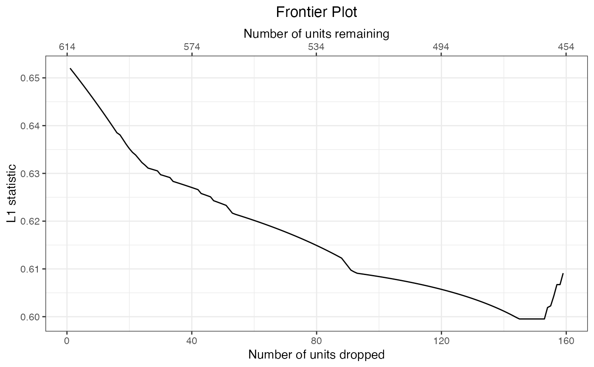
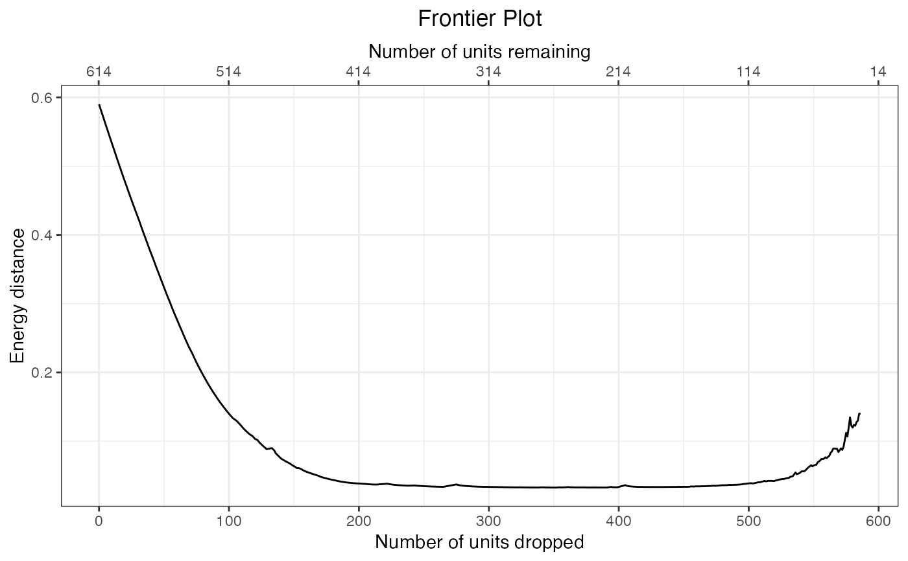

Compute the balance-sample size frontier
makeFrontier.RdmakeFrontier() computes the balance-sample size frontier, a function relating the size of a subset of the original sample to the least imbalance possible for that subset given an imbalance metric and a quantity of interest (i.e., estimand). The user can visualize the frontier using plot() methods, then pick a point along the frontier that represents what they consider to yield the optimal bias-variance tradeoff or estimate treatment effects at each point.
makeFrontier(x, ...) # S3 method for formula makeFrontier(formula, data, QOI = 'FSATT', metric = 'Mahal', breaks = NULL, distance.mat = NULL, verbose = TRUE, ...) # S3 method for data.frame makeFrontier(x, treatment, match.on, QOI = 'FSATT', metric = 'Mahal', breaks = NULL, distance.mat = NULL, verbose = TRUE, ...) # S3 method for matchFrontier print(x, ...)
Arguments
| formula | a two-sided |
|---|---|
| x | for For |
| data | a data frame containing the variables included in |
| treatment | a string containing the name of the treatment variable. Only required for the |
| match.on | a string containing the name of the covariates variable to match on. Only required for the |
| QOI | the quantity of interest (i.e., estimand); allowable options include |
| metric | the imbalance metric to be minimized; allowable options include |
| breaks | when |
| distance.mat | when |
| verbose |
|
| ... | arguments passed to other methods (ignored). |
Details
makeFrontier() computes the matching frontier for a given dataset, quantity of interest (QOI), and imbalance metric. The frontier describes the relationship between the size of the remaining sample and the lowest imbalance possible given that sample size. How the frontier is formed depends on the QOI and imbalance metric. Three types of frontier are currently available depending on the argument supplied to metric: pair distance-based frontiers ('Mahal', 'Euclid', and 'Custom'), bin-based frontiers ('L1', 'L1median', 'L2', and 'L2median') and energy distance-based frontiers ('Energy'). These are described briefly below and in more detail vignette("MatchFrontier").
Pair distance-based frontiers
With a pair distance-based frontier, each unit is paired with the closest unit of the opposite treatment group, where the distance is measured as the Mahalanobis distance, the Euclidean distance, or a user-supplied distance, as determined by the metric argument. Pairing is done with replacement so units can be paired to multiple units at a time. The average distance between each unit and its paired unit is used as the imbalance metric. The frontier is formed by dropping one unit at a time, starting with the unit that is farthest from its paired unit. If two units are equally far from their respective paired units, they are both dropped. In this way, the imbalance metric will decrease monotonically until no units remain or all remain pairs contain identical members.
These frontiers can only be used when the QOI is the FSATE or FSATT. The distance between units used to form the pairs and compute the imbalance metric can be computed the Mahalanobis distance (metric = 'Mahal'), the Euclidean distance (metric = 'Euclid'), or a user-supplied distance (metric = 'Custom'). When (metric = 'Custom'), a distance matrix must be supplied to distance.mat with a row for each treated unit and a column for each control unit.
Bin-based frontiers
Bin-based frontiers involve assigning each unit into a bin based on its unique combination of coarsened covariates. The frontier is formed by dropping one unit at a time, in particular, the unit that when dropped would yield the greatest decrease in the imbalance metric. Bin-based frontiers are formed by subset selection rather than pairing; units are not paired with each other, and the initial point of the frontier is computed on the unmodified sample (in contrast to pair distance-based frontiers, where the initial point is computed after pairing). Bin-based frontiers can be thought of as a close relative to coarsened exact matching, as implemented in cem and MatchIt (i.e., using matchit() with method = "cem").
These frontiers can be used when the QOI is the FSATE or SATT. The imbalance metrics include the L1 and L2 statistic, which summarize the discrepancy between the relative proportions of treated and control units in each bin. Bins can be computed by supplying an argument to breaks, or they can be computed automatically as the bins that yield the median value of the imbalance metric across a random sample of binnings. For the latter, metric should be specified as 'L1median' or 'L2median'. Because this involves a random process, a seed should be set prior to running to ensure results are replicable.
Energy distance-based frontiers
Like bin-based frontiers, energy distance-based frontiers involve subset selection rather than pairing. The frontier is formed by dropping one unit at a time, in particular, the unit that when dropped would yield the lowest value of the imbalance metric. The imbalance metric is the energy distance, a scalar measure of the difference between two multivariate cumulative density functions. In each sample, each unit's contribution to the energy distance is computed, and the unit with the greatest contribution is dropped. Unlike the other frontiers, the energy distance-based frontier is non-monotonic; there is often a point when discarding additional units increases rather than decreases the imbalance metric.
These frontiers can be used when the QOI is the SATE, FSATE, or SATT. For the SATE, the energy distance is computed as Huling and Mak's (2020) "improved" energy distance, which is the sum of the energy distance between the treated group and the original full sample, the energy distance between the control group and the full sample, and the energy distance between the treated and control groups. Units from either group may be dropped. As the energy distance decreases, the resulting groups each increasingly resemble the full sample and each other. For the FSATE, the energy distance is computed only between the treated and control groups. For the SATT, the energy distance as computed only between the treated and control groups, but only control units can be dropped.
Quantities of interest (QOIs)
The QOI argument can be set to control the estimand, i.e., the group to which the effect is meant to generalize. The sample average treatment treatment effect (SATE) is the average effect of treatment in the entire sample. The feasible sample average treatment effect (FSATE) is the average effect of treatment in the sample remaining after units form both groups are dropped. The sample average treatment effect in the treated (SATT) is the average effect of treatment in the sample of those who were treated. The feasible sample average treatment effect in the treated (FSATT) is the average effect of treatment in the sample of treated units after some treated units are dropped.
Value
A matchFrontier object, which contains the matching frontier as well as information about the the function call.
the matching frontier, which contains four components:
drop.order: a list containing the index of the units dropped at each point on the frontier. The first entry will be empty, indicating that no units have been dropped.Xs: a vector containing the cumulative number of units dropped at each point on the frontier. The first value will be 0.Ys: a vector containing the value of the imbalance metric at each point on the frontier.distance.mat: when using a pair distance-based frontier or energy distance-based frontier, the distance matrix used to compute the imbalance statistic.
the name of the treatment variable.
the argument supplied to QOI.
the argument supplied to metric.
the dataset containing the units.
a vector of the names of the covariates used in the matching.
with a pair distance-based metric, the indices of the units to which each units is paired. When QOI is 'FSATT', control units will have NA values.
the original call to makeFrontier().
the number of units present at the first point in the frontier (i.e., the original sample). For the FSATT, this is the number of treated units; for the SATT, this is the number of control units.
References
King, G., Lucas, C., & Nielsen, R. A. (2017). The Balance-Sample Size Frontier in Matching Methods for Causal Inference. American Journal of Political Science, 61(2), 473-489. doi: 10.1111/ajps.12272
See also
summary.matchFrontier() for viewing a summary of the frontier.
plot.matchFrontier() for plotting the frontier.
generateDataset() and frontier_to_matchit() for extracting a dataset or matchit object at one point on the frontier.
estimateEffects() for estimating effects along the frontier.
MatchIt::matchit() for a more traditional form of matching at a single point on the theoretical frontier.
Examples
data("lalonde", package = "MatchIt") #Pair distance frontier for FSATT f1 <- makeFrontier(treat ~ age + educ + married + re74, data = lalonde, QOI = "FSATT", metric = "Mahal") f1#> A matchFrontier object #> - quantity of interest: FSATT #> - imbalance metric: average pairwise Mahalanobis distance #> - treatment: treat #> - covariates: age, educ, married, re74 #> - number of points: 100#> Summary of matchFrontier object: #> #> N treated N control N total Statistic #> Start 185 185 0.199 #> End 28 28 0 #> Best 28 28 0 #> ^#L1 distance frontier for FSATE f2 <- makeFrontier(treat ~ age + educ + married + re74, data = lalonde, QOI = "FSATE", metric = "L1") f2#> A matchFrontier object #> - quantity of interest: FSATE #> - imbalance metric: L1 statistic #> - treatment: treat #> - covariates: age, educ, married, re74 #> - number of points: 159#> Summary of matchFrontier object: #> #> N treated N control N total Statistic #> Start 185 429 614 0.652 #> End 38 417 455 0.609 #> Best 51 417 468 0.6 #> ^#Energy distance frontier for SATE f3 <- makeFrontier(treat ~ age + educ + married + re74, data = lalonde, QOI = "SATE", metric = "Energy") f3#> A matchFrontier object #> - quantity of interest: SATE #> - imbalance metric: energy distance #> - treatment: treat #> - covariates: age, educ, married, re74 #> - number of points: 508#> Summary of matchFrontier object: #> #> N treated N control N total Statistic #> Start 185 429 614 0.59 #> End 14 14 28 0.14 #> Best 49 213 262 0.033 #> ^